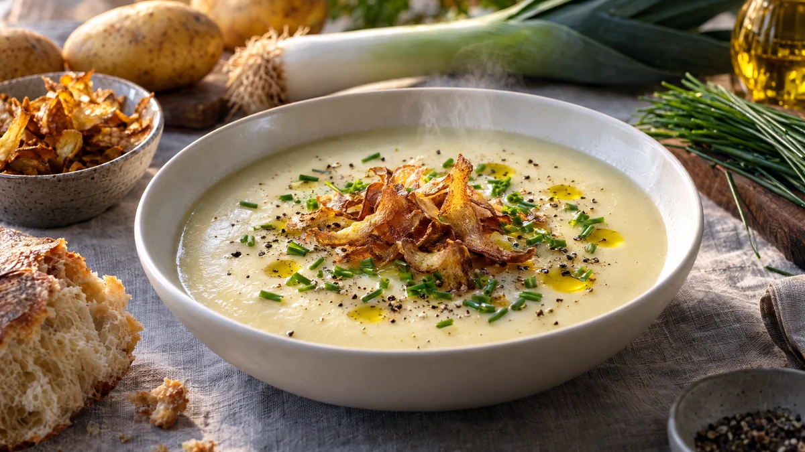

RESTFEST · RECEPTSoppa
Potatis- och purjolökssoppa med krispiga potatisskal
Några potatisar, en purjolök och skalen du annars slänger. Soppan mixas sammetslen och blek som grädde, och skalen rostas i ugnen till gyllene chips som läggs i en hög mitt i skålen, med gräslök och olivolja runt om. Fransk vardagssoppa som ser ut som förrätten på en brasserie, helt vegansk och utan svinn.
- Förberedelse
- 15 min
- Tillagning
- 35 min
- Portioner
- 4
- Nivå
- Nybörjare
 Det här behöver du
Det här behöver du
JÄMFÖRT MED DIN KYL
Tryck på + vid det du behöver köpa.
Soppa
Krispiga skal
Till servering
Gör så här
- Sätt ugnen på 200 grader. Skrubba potatisen noga, eftersom skalen ska ätas. Skala den med en potatisskalare och spara skalen.
- Vänd skalen i olivolja, salt och rökt paprika på en plåt med bakplåtspapper och bred ut dem i ett lager. Rosta i mitten av ugnen i 15–20 minuter, tills de är gyllene och krispiga. Håll koll mot slutet, tunna skal bränns fort.
- Skär potatisen i bitar, ca 3 cm. Dela purjolöken på längden och skölj den noga mellan lagren, där brukar det sitta jord. Skiva den vita och ljusgröna delen. Hacka löken och vitlöken.
- Fräs purjolök, lök och vitlök i olivoljan i en stor kastrull på medelvärme i 6–8 minuter, tills allt är mjukt. Löken ska inte få färg, då blir soppan inte lika ljus.
- Lägg i potatis, vatten, buljongtärningar och lagerblad. Koka upp och låt sjuda under lock i 20 minuter, tills potatisen är helt mjuk.
- Ta upp lagerbladet och mixa soppan helt slät med en stavmixer. Rör ner havregrädden och värm försiktigt. Späd med lite vatten om soppan är för tjock. Smaka av med salt, vitpeppar och muskot.
Dekoration och servering
- Häll upp soppan i djupa, ljusa skålar och gör en liten grop i mitten med baksidan av en sked.
- Lägg en hög krispiga skal i gropen precis före servering, så att de inte hinner mjukna.
- Strö över gräslök, ringla över olivolja och avsluta med nymald svartpeppar.
- Servera resten av skalen i en skål bredvid, de försvinner som chips.
- Soppan går bra att frysa, men rosta skalen färska.
Mått och ugnstemperaturer
Måtten är svenska (dl, msk, tsk, krm). Ugnstemperaturerna gäller vanlig ugn med över- och undervärme; med varmluft, sänk med 20 grader.